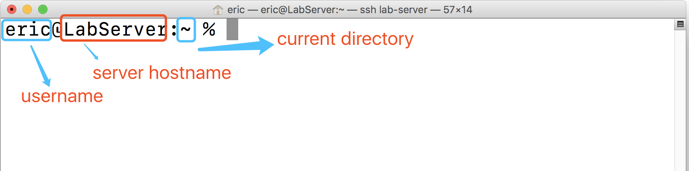
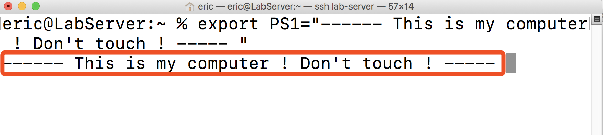
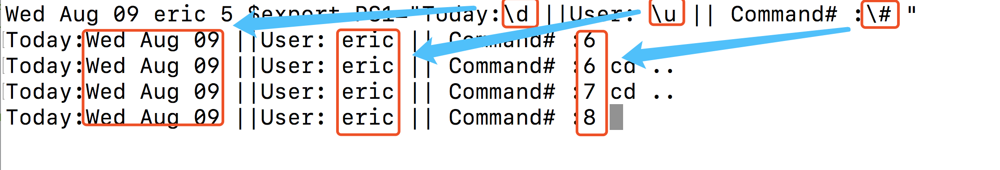
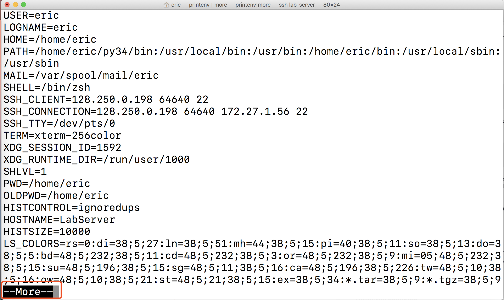

Quick Start
If you use Windows system, please choose one of 3 ways below:
If you use MacOS, I also recommend you to set up an virtual environment for your learning because it can protect your computer from being crashed:
-
Use another remote server.
-
Refer to Virtual Machine to set up a virtual Linux environment.(Recommanded)
-
Using a online Linux emulator system, such as this (Not recommended)
Let's begin from the most common ones:
Preparation
You need a software which can connect with your Linux server via SSH protocol so that you can control your Linux just using commands.
SSH like Windows Remote Controller - You can use SSH & Shell commands to control your server.
- If you use Windows systems, you may need PuTTY or something you like to connect to the server
- If you use MacOS, just open your
Terminal(if you do not know how to open it, you may be not prepared for this document...) - If you *unix systems, you may not need to go through this document...
something like this: 
There are 3 areas marked in the picture. All this information can be changed if you update the environment variable PS1, which we will discuss it in the next section.
Environment Variables
Lots of configurations of Linux are controlled by environment variables. A simple example is the one we mentioned above - the shell prompt:
eric@LabServer:~ %
# eric : the current login user
# LabzServer : the server hostname
# ~ : the working directory (~ means the home directory of the current user)
This appearance is controlled by an environment variable - PS1.
OK, let's make it something cool:
export PS1="------ This is my computer ! Don't touch ! ----- "
Now we get: 
What if we want something dynamic? Such as we want to see the date and the sequence number of our command in this section?
Example
export PS1="Today:\d ||User: \u || Command# :\# "
# \d -> Show current date
# \u -> Show current user
# \# -> Show the sequence number of commands in this section

Let me explain what happens:
1. export -> this key word indicates that the variable assignment operation also works in its parent process(it is a little complex, we will talk about it in Script section)
2. PS1="Today:\d ||User: \u || Command# :\# " -> This is an assignment:
- "Today:..||User:...|| Command#" :-->These words are normal words, just as what they are showing
- \d --> A placeholder that tells Linux to put current date here.
- \u --> A placeholder that tells Linux to put current username here.
- # --> A placeholder that tells Linux to put the command sequence number of this section.
You can reference here for more information about the placeholders in PS1 variable.
Lots of other variables can be found Use command showing below to have a big picture about what kinds of environment variables you may have:
printenv
This command will print all variables at once but you may have some problems on scrolling up/down. Try this:
printenv|more
|symbol is apipline, which can pass the output of previous one to the next one.In this case, the output ofprintenvwill be passed tomoremoreis command to print content of files pages by pages. So that you will see the picture showing below and you can just hit blank for next page:

Provide your comment <here>